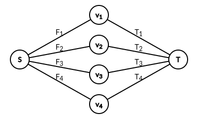

笠笠和伦伦来到了一家魔法商店，这家商店内有 $n$ 件礼品，礼品从 $1 \sim n$ 编号，$i$ 号礼品的魅力值为 $c_i$，价格为 $v_i$。
两人希望购买一些礼品，但他们的要求比较奇怪：假设购买到的礼品集合为 $S = \left\{ s_1, s_2, \cdots, s_p \right\}$ ($1 \leq s_i \leq n$)，两人要求对于 $S$ 中任意的非空子集 $T = \left\{ t_1, t_2, \cdots, t_q \right\}$，它包含的所有礼品的魅力值异或和都不为零，即：$c_{t_1} \oplus c_{t_2} \oplus \cdots \oplus c_{t_q} \neq 0$。其中 $\oplus$ 是异或运算。在此基础上，两人还要求购买到的礼品数尽可能多。
例如：$c_1 = 1，c_2 = 2，c_3 = 5，c_4 = 6，c_5 = 7$。则 $S_1 = \left\{ 2, 3, 5 \right\}$ 不符合要求，因为 $c_2 \oplus c_3 \oplus c_5 = 0$。$S_2 = \left\{ 1, 2, 3 \right\}$ 与 $S_3 = \left\{ 2, 4, 5 \right\}$ 符合要求，其任意非空子集的异或和都不为零。$S_4 = \left\{ 1, 2 \right\}$ 因为其包含的礼品数不是最多的。
满足两人要求的礼品集合可能很多，因此商店老板为两人挑选出了两个符合要求的礼品集合 $A$ 与 $B$ (显然它们所含的礼品数相同)，伦伦喜欢集合 $A$，但笠笠更喜欢集合 $B$。为了使笠笠同意购买集合 $A$，伦伦决定使用魔法改变礼品价格。更具体地，伦伦能花费 $\left( x - v_i \right)^2$ 的魔力值，将 $i$ 号礼品的价格改为任意整数 $x$，每件礼品只能被改价一次。
伦伦希望改价后 $A$ 是所有符合要求的礼品集合之中价格总和最小的，且 $B$ 是所有符合要求的礼品集合之中价格总和最大的 (一个礼品集合的价格总和为它包含的所有礼品的价格之和)。现在请你帮伦伦计算，他至少要花费多少魔力值才能完成他的目标。
第一行包含两个正整数 $n, m$ ($n \leq 1000; m \leq 64$)，分别表示总礼品数与礼品集合 $A$ (或 $B$) 包含的礼品数。
第二行包含 $n$ 个正整数 $c_i$ ($1 \leq c_i < 2^{64}$)，第 $i$ 个整数表示 $i$ 号礼品的魅力值。
第三行包含 $n$ 个非负整数 $v_i$ ($0 \leq v_i \leq 10^6$)，第 $i$ 个整数表示 $i$ 号礼品的价格。
第四行包含 $m$ 个正整数 $a_i$ ($1 \leq a_i \leq n$)，表示礼品集合 $A$ 包含的礼品的编号。数据保证 $a_i$ 两两不同。
第五行包含 $m$ 个正整数 $b_i$ ($1 \leq b_i \leq n$)，表示礼品集合 $B$ 包含的礼品的编号。数据保证 $b_i$ 两两不同。
保证礼品集合 $A$ 和 $B$ 均符合两人的要求。
输出一行一个整数，表示伦伦至少需要花费的魔力值。
不难发现题目中的要求就是 $A, B$ 为 $S$ 的一个极大线性无关组，换句话说就是 $S$ 的基。
而我们所要的条件就是使得 $A$ 是权值最大的基 (一个基的权值记为所有元素的权值之和)，$B$ 是权值最小的基。这暗含了一种 “序” 关系。
而我们要最小化 $\displaystyle \sum_i \left( x_i - v_i \right)^2$ 的值，不难发现这是一个 “回归” 的模型。
于是，整个问题就是一个 “保序回归” 的问题，不过这个 “序” 它不是线性的，而是由向量组的基来刻画的。
而一个向量组的线性基，除了它们的大小都相同外，还有哪些其它性质呢？如何使用方便的方式去刻画它，以便适应这个 “保序回归” 的模型呢？
不难想到使用拟阵这一工具，因为 $n$ 个向量构成的线性空间中，所有的线性无关组恰好构成了一个拟阵，它叫做线性拟阵。
设题目中的线性拟阵为 $\left( S, \mathcal I \right)$，则 $S$ 中所有的极大线性无关组 ($S$ 的基)，它恰好就是拟阵中下的基。
设我们需要最大化权值的基为 $A$，那么对于 $\mathcal I$ 中其余的基 $C$，都必须要有 $w \left( A \right) \geq w \left( C \right)$ (用 $w \left( X \right)$ 表示集合 $X$ 的权值)。
那，怎样建立从 $A$ 到 $C$ 的一个比较好的过渡呢？
首先，显然 $\left| A \right| = \left| C \right|$。设 $\Lambda = A \cap C$，那么 $\Lambda$ 中的元素已经是共有的，我们暂且忽略不计，目前只需要考虑从 $A \setminus \Lambda$ 到 $C \setminus \Lambda$ 这一不交集合的过渡。
注意到 $\left| A \setminus \Lambda \right| = \left| C \setminus \Lambda \right|$，因此我们自然而然希望有一个从 $A \setminus \Lambda$ 到 $C \setminus \Lambda$ 的完美匹配。而且，这样的匹配应当满足某些性质，以便 $w \left( A \setminus \Lambda \right) - w \left( C \setminus \Lambda \right)$ 可以拆成几个基本量的和。
事实上，我们可以证明如下结论：
设 $I, J$ 是 $\mathcal I$ 中的基，则存在一个 $I \setminus J$ 到 $J \setminus I$ 的完美匹配 $M$，满足 $\forall \left( u, v \right) \in M$，有 $\left( I \setminus \left\{ u \right\} \right) \cup \left\{ v \right\} \in \mathcal I$。
我们需要用到如下引理 (拟阵的性质)：
(强 基交换引理) 设 $I, J$ 是 $\mathcal I$ 中的基，$I \neq J$，则存在 $u \in I \setminus J, v \in J \setminus I$ 满足 $\left( I \setminus \left\{ u \right\} \right) \cup \left\{ v \right\}$ 和 $\left( J \setminus \left\{ v \right\} \right) \cup \left\{ u \right\}$ 都是 $\mathcal I$ 的基。
该性质的证明从略。
考虑证明原命题，设 $\Delta = \left| I \setminus J \right| = \left| J \setminus I \right|$，对 $\Delta$ 作归纳证明。
当 $\Delta = 1$ 时，结论显然 (取 $u$ 为 $I \setminus J$ 中的唯一元，$v$ 为 $J \setminus I$ 中的唯一元)。
设结论对 $\Delta - 1$ 成立，考虑 $\Delta$ 的情形。首先，由强 基交换引理，存在 $u \in I \setminus J, v \in J \setminus I$ 满足 $\left( I \setminus \left\{ u \right\} \right) \cup \left\{ v \right\}$ 和 $\left( J \setminus \left\{ v \right\} \right) \cup \left\{ u \right\}$ 都是 $\mathcal I$ 的基。
那么我们取边 $\left( u, v \right)$，并构造基 $J' = \left( J \setminus \left\{ v \right\} \right) \cup \left\{ u \right\}$，此时有 $\left| I \setminus J' \right| = \left| J' \setminus I \right| = \Delta - 1$。对 $I$ 和 $J'$ 使用归纳假设，即得到 $I \setminus J' = \left( I \setminus J \right) \setminus \left\{ u \right\}$ 和 $J' \setminus I = \left( J \setminus I \right) \setminus \left\{ v \right\}$ 之间的一个完美匹配，加上边 $\left( u, v \right)$ 即得一 $I \setminus J$ 到 $J \setminus I$ 的完美匹配，并由构造知该匹配满足对其中任意一条边 $\left( u, v \right)$，有 $\left( I \setminus \left\{ u \right\} \right) \cup \left\{ v \right\} \in \mathcal I$。
综上，由数学归纳法知结论成立。
于是，对这样的集合 $A$ 和 $C$，我们得到了一个从 $A \setminus \Lambda$ 到 $C \setminus \Lambda$ 的完美匹配，设这组匹配为 $\left( u_1, v_1 \right), \left( u_2, v_2 \right), \cdots \left( u_k, v_k \right)$。
注意到 $\left( A \setminus \left\{ u_i \right\} \right) \cup \left\{ v_i \right\} \in \mathcal I$，由 $A$ 权值的最大性可知 $w \left( u_i \right) \geq w \left( v_i \right)$。
从而 $\displaystyle w \left( A \setminus \Lambda \right) - w \left( C \setminus \Lambda \right) = \sum_{i=1}^k \left( w \left( u_i \right) - w \left( v_i \right) \right) \geq 0$，我们成功地将 $w \left( A \setminus \Lambda \right) - w \left( C \setminus \Lambda \right)$ 拆成了几个基本量的和。
因此，$A$ 是权值最大的基的充要条件就是：对于 $\forall u \in A, v \in S \setminus A$，只要 $\left( A \setminus \left\{ u \right\} \right) \cup \left\{ v \right\} \in \mathcal I$，就有 $w \left( u \right) \geq w \left( v \right)$。
同理，$B$ 是权值最小的基，当且仅当对于 $\forall u \in B, v \in S \setminus B$，$\left( B \setminus \left\{ u \right\} \right) \cup \left\{ v \right\} \in \mathcal I$ 蕴含 $w \left( u \right) \leq w \left( v \right)$。
于是，现在我们就将 $A, B$ 的最大/小性转化为了若干对偏序的问题。
到现在为止，我们就将问题转化为了有向图上的保序回归。
还是根据《浅谈保序回归问题》中的做法，我们对这个看似更加 “一般” 的问题使用整体二分的思想。
(ps: 事实上，我们还要求最终的 $x_i$ 是整数，因此那道题中取平均数的方法就不在可靠了，倒是比较类似这道题中的方法)
具体地，设当前点集的回归值的下界为 $L$，上界为 $R$ (由于 “序” 不是线性的，因此不是区间，而是点集)，取 $M \in \left[ L, R \right)$，则我们需要先做这样一个回归：
而此时每个点只有两个选择 (可以看作 $0, 1$)，它需要满足某些条件，比如当 $y_u = 1$ 时 $y_v = 1$，而每个点又有若干代价或收益。这是一个经典的最小割建模：
我们把每个变量看作一个布尔变量，然后条件限制就相当于 $y_u \wedge \neg y_v$ 时会产生 $+ \infty$ 的代价，这符合 $\operatorname{cost} \left( l \wedge \neg r \right)$ 的形式，因此可以使用最小割建模。
当然，你也可以将每个点看成一个价值为 $\left( M + 1 - v_i \right)^2 - \left( M - v_i \right)^2 = 2 \left( M - v_i \right) + 1$ 的物品，然后有若干形如 “选了某个物品则必须选另一个物品” 的条件，于是它可以可以用最大权闭合子图来建模。不过事实上这两种建模所得到的图是拓扑等价的。
于是跑一遍网络流后就得到了所有 $y_i$ 的值，从而也得到了 $x_i \leq M$ 还是 $x_i \geq M + 1$，继续递归下去即可。
分析一下时间复杂度，建图的过程可以暴力枚举，注意到基的大小不超过 $m$，故时间复杂度为 $O \left( \dfrac {m n} \omega \right)$，二分的层数为 $O \left( \log v_i \right)$，每层的时间复杂度总和为一个网络流复杂度 $O \left( \operatorname {Flow} \left( n \right) \right)$，故总时间复杂度为 $O \left( \dfrac {m n} \omega + \operatorname {Flow} \left( n \right) \cdot \log v_i \right)$。
#include <bits/stdc++.h>
#define EB emplace_back
#define lg2 std::__lg
using std::cin;
using std::cout;
using std::vector;
typedef long long ll;
typedef unsigned long long u64;
typedef std::pair <int, int> pr;
const int N = 1054;
int n, r;
int A[N], B[N], a[N];
u64 c[N];
vector <pr> Ga, Gb;
int tr[N];
bool bel[N];
ll ans = 0;
inline ll sqr(int x) {return (ll)x * x;}
namespace Flow {
#define ad(x) (((x - 1) ^ 1) + 1)
const int N = ::N, M = 2000054;
struct edge {
int u, v; ll f;
edge (int u0 = 0, int v0 = 0, ll f0 = 0) : u(u0), v(v0), f(f0) {}
} e[M];
int V = 2, E = 0, si = 1, ti = 2;
ll flow;
int first[N], next[M];
int dep[N], cur[N], que[N];
inline void reset(int n) {for (V = n; E; --E) first[e[E].u] = 0;}
inline void addedge(int u, int v, ll f) {
e[++E] = edge(u, v, f), next[E] = first[u], first[u] = E;
e[++E] = edge(v, u), next[E] = first[v], first[v] = E;
}
bool bfs() {
int h, t = 1, i, x, y;
memset(dep, -1, (V + 1) << 2);
que[0] = si, dep[si] = 0;
for (h = 0; h < t; h++) {
if ((x = que[h]) == ti) return true;
for (i = first[x]; i; i = next[i])
if (dep[y = e[i].v] == -1 && e[i].f)
que[t++] = y, dep[y] = dep[x] + 1;
}
return false;
}
ll dfs(int x, ll lim) {
ll a, c, f = 0;
if (x == ti || !lim) return lim;
for (int &i = cur[x]; i; i = next[i])
if (dep[e[i].v] == dep[x] + 1 && e[i].f) {
a = std::min(lim - f, e[i].f);
c = dfs(e[i].v, a);
e[i].f -= c, e[ad(i)].f += c;
if ((f += c) == lim) return f;
}
return f;
}
ll Dinic() {
for (flow = 0; bfs(); flow += dfs(si, LLONG_MAX))
memcpy(cur, first, (V + 1) << 2);
return flow;
}
}
namespace linear {
u64 lb[64];
inline void reset() {memset(lb, 0, sizeof lb);}
inline void insert(u64 x) {for (int i; x; ) if (lb[i = lg2(x)]) x ^= lb[i]; else {lb[i] = x; return;}}
inline bool represent(u64 x) {for (int i; x; ) if (lb[i = lg2(x)]) x ^= lb[i]; else return false; return true;}
}
vector <pr> get_edge(int r, int *X) {
int i, j; vector <pr> ret;
for (i = 0; i < r; ++i) {
linear::reset();
for (j = 0; j < r; ++j) if (j != i) linear::insert(c[X[j]]);
for (j = 0; j < n; ++j) if (!(j == X[i] || linear::represent(c[j]))) ret.EB(X[i], j);
}
return ret;
}
void partition(const vector <int> &V, const vector <pr> &E, int inf, int sup) {
if (V.empty()) return;
if (inf == sup) {for (int i : V) ans += sqr(inf - a[i]); return;}
int i, n = V.size(), mid = (inf + sup) / 2;
vector <int> Vi, Vs; vector <pr> Ei, Es;
Flow::reset(n + 2);
for (i = 0; i < n; ++i)
Flow::addedge(1, i + 3, sqr(mid - a[V[i]])),
Flow::addedge(i + 3, 2, sqr(mid + 1 - a[V[i]])),
tr[V[i]] = i;
for (const pr &e : E)
Flow::addedge(tr[e.first] + 3, tr[e.second] + 3, LLONG_MAX);
Flow::Dinic();
for (i = 0; i < n; ++i) ((bel[V[i]] = ~Flow::dep[i + 3]) ? Vs : Vi).EB(V[i]);
for (const pr &e : E) if (bel[e.first] == bel[e.second]) (bel[e.first] ? Es : Ei).EB(e);
partition(Vi, Ei, inf, mid), partition(Vs, Es, mid + 1, sup);
}
int main() {
int i, *mn, *mx; vector <int> $;
std::ios::sync_with_stdio(false), cin.tie(NULL);
cin >> n >> r;
for (i = 0; i < n; ++i) cin >> c[i];
for (i = 0; i < n; ++i) cin >> a[i];
for (i = 0; i < r; ++i) cin >> A[i], --A[i];
for (i = 0; i < r; ++i) cin >> B[i], --B[i];
Ga = get_edge(r, A), Gb = get_edge(r, B);
for (const pr &e : Gb) Ga.EB(e.second, e.first);
std::tie(mn, mx) = std::minmax_element(a, a + n);
for ($.reserve(n), i = 0; i < n; ++i) $.EB(i);
partition($, Ga, *mn, *mx), cout << ans << '\n';
return 0;
}
坑1：注意网络流的容量可能超过 int，需要使用 long long，并注意不要漏改一些部分。
坑2：在通过线性基建图的时候注意不要连出自环。
坑3：整体二分递归时，注意边集取原边集的子集，防止退化。